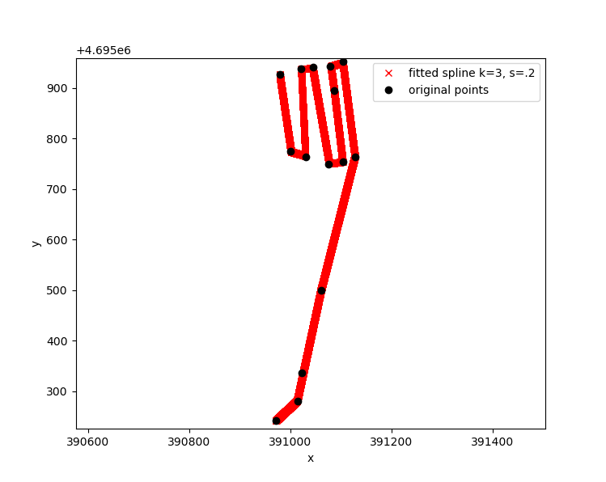

Linking the GPR to GPS
In this particular survey the GPR was triggered using an odomoter and a fixed trace spacing. This works well, but unfortunately it doesn’t give you geolocation. This is why GPR data are usually collected jointly with a GPS which would make this step unneccessary. Anyway, be it as it may, the problem is now as follows: We have a fixed number of traces which were collected with a fixed trace spacing (here 0.2 m). Start, intermediated and turning points were marked with a GPS (stored in a separate txt file ‘CoordsOldFan.txt’). The goal is now to linearly interpolate between these points so that we can assign a geolocation to each trace. The result should look as follows:
{kind=link}
And those are the corresponding functions developed in class
def Coords2UTM(Lat, LatDM, Lon, LonDM):
"""
Helper function: Move into a local rectangluar coordinate system
"""
#input Lat LatDecimalminutes Lon LonDecimalMinutes
#output Lat decimal degrees; Lon decimal degrees
LatDD = Lat+LatDM/60.0
LonDD = Lon+LonDM/60.0
transformer = Transformer.from_crs("EPSG:4326", "EPSG:32633")
x,y = transformer.transform(LatDD,LonDD)
return x, y
def InterpolateCoordsToTrace(FilePath2Coordinates,LineID,NumberOfPoints,AuxPlot):
"""
Interpolated coordinates linearly between ordered set of points
"""
from scipy.interpolate import UnivariateSpline
## Adapted from Stackoverflow use spline interpolation btw. points
## Read Coords
df = pd.read_csv(FilePath2Coordinates, sep=' ',comment='#')
## Get all coords pertaining to Line and get distance
ldf = df[df['LineID'].str.match(LineID)].copy()
xx,yy = Coords2UTM(ldf.iloc[:, 1], ldf.iloc[:, 2],ldf.iloc[:, 3], ldf.iloc[:, 4])
ldf['x'] = xx;ldf['y'] = yy
ldistance = np.cumsum( np.sqrt(np.diff(xx)**2 + np.diff(yy)**2 ) )
ldistance = np.insert(ldistance, 0, 0)/ldistance[-1] ##Check RD
# Build a list of the spline function, one for each dimension:
points = np.vstack( (xx, yy) ).T
# This is rubber banding
#splines = [UnivariateSpline(ldistance, coords, k=3, s=.2) for coords in points.T]
splines = [UnivariateSpline(ldistance, coords, k=1) for coords in points.T]
# Computed the spline for the asked distances:
alpha = np.linspace(0, 1, NumberOfPoints)
points_fitted = np.vstack( spl(alpha) for spl in splines ).T
if AuxPlot==1:
# Graph:
plt.plot(*points.T, 'ok', label='original points');
plt.plot(*points_fitted.T, 'xr', label='fitted spline k=3, s=.2');
plt.axis('equal'); plt.legend(); plt.xlabel('x'); plt.ylabel('y');
plt.show()
df_track = pd.DataFrame();df_track['x']=points_fitted[:,0];df_track['y']=points_fitted[:,1]
return df_track
def LinkGprWithDEM(PathToRaw,PathToProc,FilePath2Coordinates,FilePath2DEM,LineID,AuxPlot=0):
"""
Interpolated GPR coordinates between turning points.
Extract DEM elevation at interpolated coordinates
"""
if os.path.isfile(PathToProc):
print('The output GPR file already exists. I skip this for now.')
else:
import scipy.io
##Load the RAW GPR file
ldat = scipy.io.loadmat(PathToRaw)
##Apply the rubber-band correction using spline interpolation
df_track = InterpolateCoordsToTrace(FilePath2Coordinates,LineID,ldat['tnum'][0][0],0)
##Get the topography from the DEM along GPR tracks.
df_track = pygmt.grdtrack(grid=FilePath2DEM,points=df_track,newcolname = "elevation")
##Write all information into the GPR file
ldat['x_coord']=np.array(df_track['x']);ldat['y_coord']=np.array(df_track['y']);
ldat['elev']=np.array(df_track['elevation']);
ldistance = np.cumsum( np.sqrt(np.diff(ldat['x_coord'])**2 + np.diff(ldat['y_coord'])**2 ) )
ldistance = np.insert(ldistance, 0, 0)/ldistance[-1]
ldat['dist']=ldistance
##Output GPR file for further processing.
scipy.io.savemat(PathToProc, ldat)
print(f'Wrote output GPR file {PathToProc}')
tmp = ldat['elev']
print(f'Max. elevation is: {tmp.max()}')
if AuxPlot==1:
plt.fig()
plt.plot( ldat['dist'], ldat['elev'],'r.')